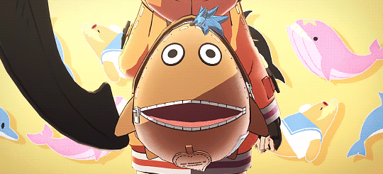

The happy-go-lucky first mate of the Jellyfish Pirates. May was orphaned by the crusades of the gear war, losing both her home and family in their Japanese colony. She was found by the swordsman captain Johnny, and raised to join the Jellyfish Pirates and became the eventual first mate due to her great importance to the gang. She developed a huge crush on Johnny for saving her life, and seeks to improve herself to catch his attention. Due to how young she was when she was found, she lost most of her memories and this is a constant worry to May. "Who am I, really?", is a question that plagues her. On her journey to find out more of herself, she has come to interact with others such as Chipp and Anji for guidance. She also has a severe case of peladophobia (the fear of bald people), to an almost other worldly degree being able to sense when theyre are near from a distance.
